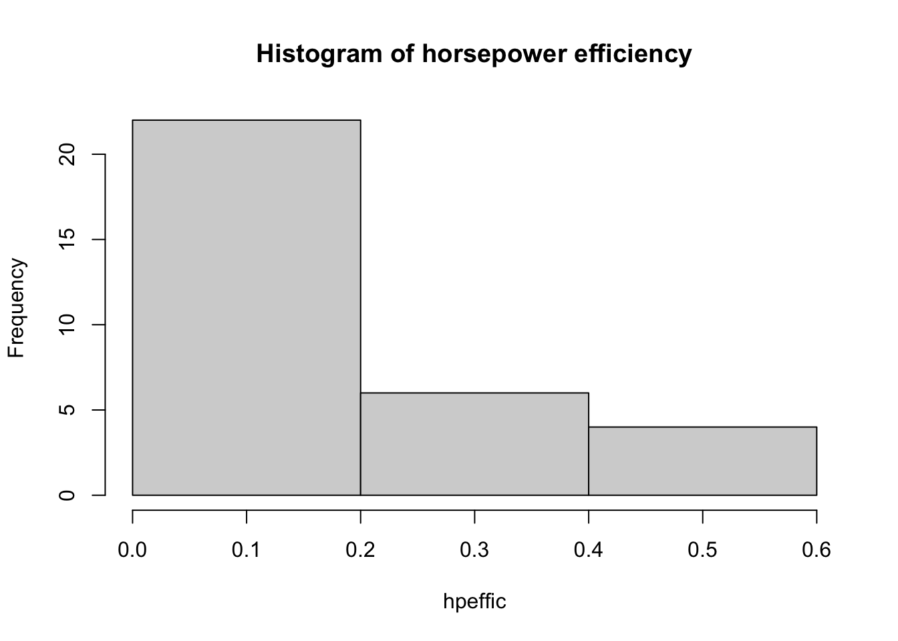

Let’s keep working with the mtcars dataset. Before we dig in, let’s look at a few more functions which tell what our dataset looks like.
Q: What type of object is mtcars?
class(mtcars) ## [1] "data.frame"mtcars is a data frame, which is the main type of object for holding data. We’ll see soon that many packages made for datasets assume that we’re working in data frames.
We might also want to take a peek at our dataset without viewing the whole thing. This is done through
str(mtcars) ## 'data.frame': 32 obs. of 11 variables:
## $ mpg : num 21 21 22.8 21.4 18.7 18.1 14.3 24.4 22.8 19.2 ...
## $ cyl : num 6 6 4 6 8 6 8 4 4 6 ...
## $ disp: num 160 160 108 258 360 ...
## $ hp : num 110 110 93 110 175 105 245 62 95 123 ...
## $ drat: num 3.9 3.9 3.85 3.08 3.15 2.76 3.21 3.69 3.92 3.92 ...
## $ wt : num 2.62 2.88 2.32 3.21 3.44 ...
## $ qsec: num 16.5 17 18.6 19.4 17 ...
## $ vs : num 0 0 1 1 0 1 0 1 1 1 ...
## $ am : num 1 1 1 0 0 0 0 0 0 0 ...
## $ gear: num 4 4 4 3 3 3 3 4 4 4 ...
## $ carb: num 4 4 1 1 2 1 4 2 2 4 ...How convenient! Here we are given the object type, the number of variables, their names, how many observations of each variable, and the first couple of data points to boot! To just see the first few entries, type
head(mtcars) ## mpg cyl disp hp drat wt qsec vs am gear carb
## Mazda RX4 21.0 6 160 110 3.90 2.620 16.46 0 1 4 4
## Mazda RX4 Wag 21.0 6 160 110 3.90 2.875 17.02 0 1 4 4
## Datsun 710 22.8 4 108 93 3.85 2.320 18.61 1 1 4 1
## Hornet 4 Drive 21.4 6 258 110 3.08 3.215 19.44 1 0 3 1
## Hornet Sportabout 18.7 8 360 175 3.15 3.440 17.02 0 0 3 2
## Valiant 18.1 6 225 105 2.76 3.460 20.22 1 0 3 1Sometimes we will need to define new variables which are combinations of existing variables. For instance, one might be interested in creating a new variable called horsepower efficiency (Note: the author is a mathematician, not an auto mechanic. I have no clue if this is a real thing…). We can define it by
\[ \hbox{ HPE} = \mathrm{MPG}/\mathrm{HP}.\] Here \(MPG\) is the miles per gallon of a car, and \(HP\) is its horsepower. In R, we can create calculate the HPE by
hpeffic = mtcars$mpg/mtcars$hp Note that this type of language is anathema to the mathematician. It’s nonsense to divide a vector by a vector. To the R programmer, however, this is just pedantry. We all know what it means to divide two vectors. Just perform the division operation pointwise. When R does this for a function, we say that it is vectorized.
Q: For the vectors \(v = [3,5,2]\) and \(w = [8,4,6]\), verify that addition, subtraction, multiplication, division, and exponentiation are all vectorized.
v = c(3,5,2)
w = c(8,4,6)
v+w## [1] 11 9 8v-w## [1] -5 1 -4v*w## [1] 24 20 12v/w## [1] 0.3750000 1.2500000 0.3333333v^w## [1] 6561 625 64Q: Which cars have HPE greater than .1?
This is done by using the which function. This gives indices of a list which satisfy a certain condition.
ind = which(hpeffic > .1)
rownames(mtcars)[ind]## [1] "Mazda RX4" "Mazda RX4 Wag" "Datsun 710"
## [4] "Hornet 4 Drive" "Hornet Sportabout" "Valiant"
## [7] "Merc 240D" "Merc 230" "Merc 280"
## [10] "Merc 280C" "Fiat 128" "Honda Civic"
## [13] "Toyota Corolla" "Toyota Corona" "Dodge Challenger"
## [16] "AMC Javelin" "Pontiac Firebird" "Fiat X1-9"
## [19] "Porsche 914-2" "Lotus Europa" "Ferrari Dino"
## [22] "Volvo 142E"Q: Which car(s) have the smallest HPE? What is its value?
rownames(mtcars)[which.min(hpeffic)]## [1] "Maserati Bora"min(hpeffic)## [1] 0.04477612R has built in features for producing some pretty decent looking visuals. Let’s take a look at a scatterplot which plots two features on a plane. We’ll do a scatter plot comparing mpg and horsepower.
x = mtcars$mpg
y = mtcars$hp
plot(x,y, xlab = 'Miles per gallon', ylab = 'Horsepower')Q: What happens if we don’t include the text xlab and ylab in the arguments for plot?
These arguments are not necessary, but they are nice to include if you’d like to make it clear to either yourself or someone else reading your code what your variables are.
Now let’s do the another plot, comparing mpg with gears
x = mtcars$mpg
y = mtcars$gear
plot(x,y, xlab = 'Miles per gallon', ylab = 'Gears')The variable gears takes discrete values (e.g. 2,3,4) whereas mpg is a continuous variable, taking values like 13.5, 18.4, etc. In a case like this, it’s more informative to use something called a box plot.
boxplot(mpg~gear, data = mtcars)Q: What do each of the features of this box plot represent?
Q: Careful! What happens when the arguments for the boxplot are flipped?
boxplot(gear~mpg, data = mtcars)Yuck! If you picked up a newspaper and saw the above as a graph, you’d rightfully cancel your subscription. But why? It isn’t because the information presented is incorrect. This figure is indeed giving a range of gears for each value of mpg. The problem is that almost all of these mpgs have only a single value for mpg. A box plot in this case just looks awful, and it doesn’t do what graphs are supposed to do- compress information into a digestible form. The lesson here is to trust your eyes when making a figure.
When you just want to look at a single continuous variable, use a histogram. This will bin values within a particular range. R does a pretty decent job deciding what the number of bins should be, most of the time, but sometimes you need to go in yourself and change the number of bins yourself.
hpeffic = mtcars$mpg/mtcars$hp
hist(hpeffic, main = "Histogram of horsepower efficiency")Here’s too many bins:
hpeffic = mtcars$mpg/mtcars$hp
hist(hpeffic, main = "Histogram of horsepower efficiency", breaks = 50)And too few bins:
hpeffic = mtcars$mpg/mtcars$hp
hist(hpeffic, main = "Histogram of horsepower efficiency", breaks = 3)